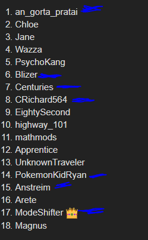

Disagree with this part:
I find that Chloe’s tone shift is quite obvious when she is scum. In WoW FM, her whole D1 felt so performative – yet I don’t see that here.
Obviously not going to judge her off of that alone, but something to note.

Disagree with this part:
I find that Chloe’s tone shift is quite obvious when she is scum. In WoW FM, her whole D1 felt so performative – yet I don’t see that here.
Obviously not going to judge her off of that alone, but something to note.
I’d recommend to read on while there’s still time.
Idk how she reacted in the WoW FM Mafia chat but I know that in Insurgency, she seemed very uneasy when it came to being mafia.
So to try and avoid clearing her too fast (Although she had been and still is my top town atm) in case she just has a good exterior in threads but might worry in scumchats.
Sure I’ll bear that in mind. So far she hasn’t said or done anything that pings scum here.
Lets see if that stays the same D2.
Still nothing
anyway gonna scumhunt because apparently 5 people SR me but none of them are the ones who actually used meta agaisnt me I feel LOL
Do you feel like you would stress if you rolled GS this game?
From experience
Sheets and stuff like this are rarely scum even if doing it is NAI
Yeah I did a real fast skim and it seems like one of the better slots as of right now
Define “stress”. Would I feel pressure? Yeah, I would. I rolled scum in my second game and completely botched my D1 because I was nervous, though I managed to recuperate in the end.
Also my spreadsheets are absolutely NAI. I will post them as any alignment.
Would that happen a second time
Crich’s walls on their townreads are a bit too IIoA for my liking (Not as in that they’re AI). Don’t think I’ll get super much out of them since I townread the same people as them anyway.
@CRichard564 You’ve been mostly focusing on forming a towncore (Which is a good strategy). But I’d still like to know if you have any scumreads other than Traveller.
I said that it didn’t feel like they were trying to solve, but I have since changed my mind on them.
Mode is just blatantly in his townmeta. PKR I didn’t have a read on back then but they should probably have enough content by now, I’ll read them in a bit.
Very likely.
You say you skimmed really fast, but I’d really like to see you and post a full readlist/your opinions, because I’m not a huge fan of this whole situation. Some people SL you, yet no one seemingly made a good case, and I personally don’t see anything dubious.
Want to see where it goes and how it progresses, from both sides.
This is absolutely typical from him and you should know it, to be honest.
IIoA was the main reason I scumread him before and turned out to be wrong, so eh.
I’d like to apply this question to everyone, honestly.
Like I mentioned before the ‘hottest’ takes belong to Seth right now, which is… Unusual.
I do know that nerd.
I was just hoping he’d improved since then, so I could see if he noticed anything I didn’t.
(Mostly for scumreads since I kinda don’t have any rn.)
Woke up
Sorry if i havent been around, busy with IRL
was doing some reading, giving my rundown on some slots:
Centuries: Posting has improved over the day imo. Tone and thought process are reminding me of WoW FM. Opener is still something in my mind, and will return to later if need be. Slight Townlean
82nd: Thought process is Natural, Tone is solid, posts decent questions and looks to be solving and is overall looking solidly towny. Townlean.
PKR: improved over the day and has solidly become one of my highest townreads atm. I have been pocketed by W!PKR before, but nothing stands out to me of him being a wolf.
Seth: Weird fucking idead overall tbh, that can hurt town than help it. Reminds me of his first posts in FoL 28 for prince talk. Slight Townlean atm.
Anstreim: Posts are fluid, hes laying out his thought process well, and is trying to push thread discussion well. Nothing seems off to me from this slot right now, but that could change over the game. Townlean
Chloe: Has a much different tone compared to her Wolf game (ayaya). While not really pushing discussion forward, her posts aren`t pinging me life WoW FM and are decent overall outside of some of the fluff. again Townlean
Apprentice: outside of his tinfoil, only has Cent as wolf read. nothing AI so far imo. Null
101st: Thought process here is different from other people, and she has been explaining her reason for why pretty well. Slot is trying to push thread discussion and i don`t sense anything off reading her posts. Townlean
CRich: Honestly, after WoW FM, Obvious town is Obvious, unless she improved her wolf game considerably.
Will do more, gonna get coffee.
I’m scum leaning Arete as they seem to be just there and disappeared.
Arete does more when they’re town from my past games with him when he was town such as SFoL 61.5.

Those are my Tls right now (and me)
I think I’ve partly mentionned why I liked them all at one point except Seth but I still think he plays more like Town Seth than Scum Seth but then even if he was EK he wouldn’t have TMI and usually Seth makes it obvious he has some form of information over others, It’s more mild than others
Gorta honestly I gave him a TL a while ago I still think he’s currently playing like Town Gorta, oh and I think I noticed a Gorta scumtell in a game of his and I don’t think he’s doing that rn
Blizer is solvy, so while yes he didn’t exactly play like that in the last game I still think it’s probably Town Blizer motivated to have a playstyle change, otherwise he has been playing fine and his push on me sounds town motivated
CRich is also weird, he had a noticeable playstyle change but then it’s also a natural one? He’s less self aware so maybe it looks a bit worse for him? But I don’t think scum Crich would do wallposts Like a catchup post at most
Anstrein I just skimmed ISO but it seemed ok, it’s weaker than some other TLs
PKR imma be honest it’s mostly because we did mindmeld on a lot of stuff + the knowledge I have of me not being scum so it cannot be W/W and his interactions with me are probably from Town him
oh and for SRs I’m going to try and think of something rn that’s what I logged on for anyway lol
Also something regarding to App
I think me being his sole read is more townie than anything else
He could be neut but I don’t think GS
I think it’s just that their WiM is lower?
Like, they’re softing a semi-confirmable class and I don’t think they would normally take this as an easy way out as either alignment?
Yeah, I agree with this.
But there are some mistakes.
Like… I clearly said Seth as a scumread and could be EK but it is not listed at all
Well, the sheets aren’t perfect even if I do try to keep going over them multiple times every day.